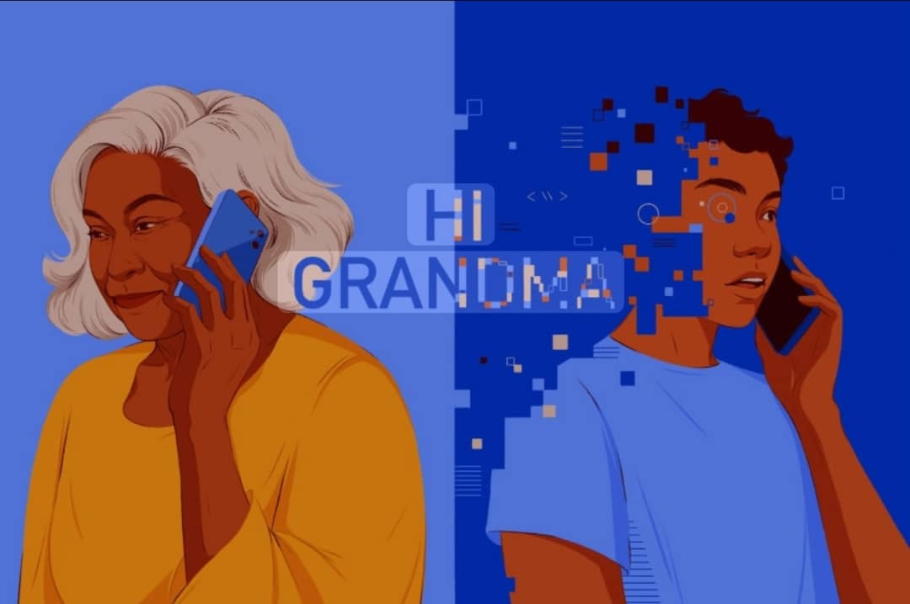

AI scams use computer technology to pretend to be someone you trust. Scammers use smart programs to copy faces, voices, and writing styles. Their goal is always the same: to trick you into giving money or information.
Key signs of an AI scam:
A deepfake is a fake video or photo created using AI. It can make someone look like they said or did something they never did.
How to spot a deepfake:

Voice cloning uses AI to copy someone's voice. With just a short audio clip, scammers can create fake phone calls that sound real.
Examples of cloned voice scams:
How to protect yourself: